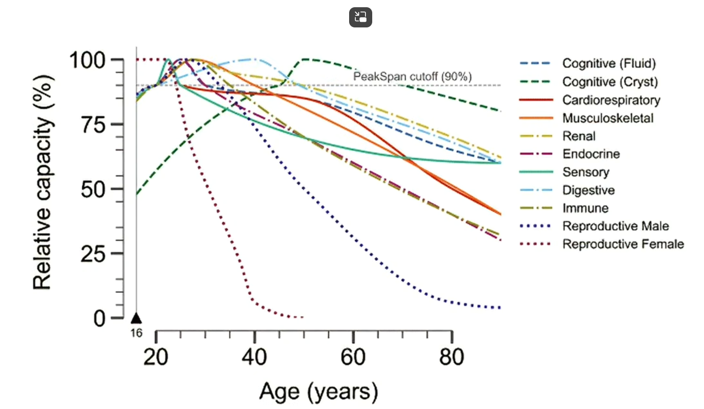

Hormones are produced by the endocrine system and regulate virtually every process in your body — growth, metabolism, reproduction, mood, sleep, and stress. Understanding them is key to optimizing health for both men and women.
The dominant androgen in males. Drives muscle growth, bone density, body hair, deep voice, libido, sperm production, and red blood cell production. Women also produce small amounts for libido, bone health, and mood.
Group of hormones governing the menstrual cycle, breast development, pregnancy, bone health, cardiovascular protection, mood, and skin elasticity. In men, small amounts regulate sperm maturation and libido.
Prepares and maintains the uterine lining for pregnancy. Rises after ovulation each cycle. Also plays roles in brain function, mood regulation, sleep quality, and metabolism. Men produce small amounts for brain health.
The most abundant steroid hormone. Acts as a precursor — your body converts it into testosterone and estrogen as needed. Peaks around age 25, then declines steadily. Influences energy, immune function, mood, and aging.
FSH (Follicle Stimulating Hormone) and LH (Luteinizing Hormone) are released by the pituitary and directly control the gonads. They orchestrate puberty, fertility, and the menstrual cycle.
Primarily stimulates breast milk production after childbirth. Also plays roles in immune regulation, metabolism, and reproductive function in both sexes.
Released when blood glucose rises after eating. Acts as a "taxi driver" moving glucose from blood into cells (liver, muscle, fat) for energy or storage. Critical for survival — but chronic excess leads to insulin resistance.
Regulate metabolic rate, heart rate, body temperature, energy generation, growth, and development. Every cell in the body has thyroid receptors. T4 (thyroxine) is the inactive form; T3 (triiodothyronine) is the active form.
Released in response to stress and low blood sugar. Mobilizes energy, suppresses inflammation acutely, and regulates the sleep-wake cycle (highest in morning). Chronic elevation is highly destructive.
Opposes insulin — released when blood sugar drops. Signals the liver to break down glycogen into glucose and release it into the blood. Active during fasting and between meals.
Released from the gut after eating. Stimulates insulin secretion, slows gastric emptying, and signals fullness to the brain. The target of Ozempic/Mounjaro drugs.
Leptin ("I'm full"): produced by fat cells, signals the brain to stop eating. Ghrelin ("I'm hungry"): produced by the stomach, stimulates appetite. They work in opposition to regulate energy balance.
Stimulates growth in children and maintains muscle mass, bone density, fat metabolism, and tissue repair in adults. Released primarily during deep sleep and after intense exercise.
Released in darkness, suppressed by light. Regulates circadian rhythm (sleep-wake cycle). Also has antioxidant and immune-modulating properties. Declines with age.
Released during physical touch, social bonding, childbirth, and breastfeeding. Promotes trust, empathy, and social connection. Also plays roles in sexual arousal and pair bonding.
Not a classical hormone but a neurotrophin that acts like one. Promotes growth of new neurons, strengthens synapses, improves learning and memory. Critical for brain health across the lifespan.
| Aspect | ♂ Males | ♀ Females |
|---|---|---|
| Dominant Sex Hormone | Testosterone (300-1000 ng/dL) | Estradiol (15-350 pg/mL, varies with cycle) |
| Hormonal Pattern | Relatively stable day-to-day; peaks in morning, dips at night (diurnal) | Cyclical (~28-day menstrual cycle); dramatic monthly fluctuations in E2, progesterone, FSH, LH |
| Puberty Trigger | Testosterone surge (~30x increase); starts ~12-14 | Estrogen surge; breast development, menarche; starts ~10-13 |
| Peak Reproductive Years | Fertility declines gradually (no sharp cutoff); sperm production continues into old age | Peak fertility 18-30; egg quality declines from ~35; menopause ~50-52 ends fertility |
| Age-Related Decline | Andropause: gradual T decline (~1%/yr from 30); no abrupt transition | Perimenopause → Menopause: dramatic estrogen/progesterone drop over 2-8 years |
| Fat Distribution | More visceral fat storage; testosterone helps burn it | Estrogen directs fat to subcutaneous (hips/thighs); shifts to visceral at menopause |
| Bone Density | Higher peak bone mass; slower decline | Lower peak bone mass; rapid loss after menopause (estrogen withdrawal) |
| Thyroid Risk | Lower risk of thyroid disorders | 5-8x higher risk of hypothyroidism and Hashimoto's |
| Endocrine Disruptor Vulnerability | BPA → 50% lower T; Phthalates → 20% lower T, poor sperm quality | PFAS → early menopause (1-2yr); BPA → pregnancy complications, 6x autism risk |
| Exercise Response | Higher testosterone → greater muscle hypertrophy from resistance training | Must be cautious with fasted high-volume training (risk of amenorrhea from FSH/LH suppression) |
Dr. Rhonda Patrick's top supplement recommendations, ranked by priority. All data sourced exclusively from her Diary of a CEO interview.
90% of the US population is not getting enough; 80% globally. The only supplement shown to slow aging even in healthy, physically active people.
D3 is the form made from sun exposure. D2 (plant form, mushrooms) is NOT as effective. Vegans should get D3 from lichen instead of D2.
The COSMOS study (Centrum Silver in adults 65+) showed remarkable cognitive benefits. Contains cofactors for metabolism, neurotransmitter synthesis, immune system, and liver function.
Important for 300 different enzymes, DNA repair, cancer prevention, and sleep. 50% of the population doesn't get enough.
Creatine monohydrate is the most well-studied form. Benefits both muscles and the brain at different doses.
A new concept from researchers at Duke University (and universities in China). Not just living longer, not just living disease-free — but maintaining within 90% of your peak function.

Different body systems peak at different ages and decline at different rates. Source: Duke University pre-print discussed in the transcript.
These are "blanket things" that affect multiple systems — healthy lifestyles are multi-system targeting.
Choose the improvement you want to make and discover Dr. Rhonda Patrick's evidence-based recommendations. All sourced from the Diary of a CEO interview.
Exercise doesn't have to feel like a chore. Spin the workout roulette, take a daily challenge, sneak in movement snacks, and build your streak. The best workout is the one you'll actually do.
Climb every staircase you encounter today. Bonus: skip the elevator entirely.
Set a timer to dance to 1 song every hour you're awake. 10 songs = 30+ minutes of cardio.
Hit 10,000 steps. Walk while on calls, after every meal, around the block before bed.
Do 5 push-ups every time you walk past your bedroom doorway. Goal: 50 reps spread across the day.
5 cat-cows · 4 lunges/side · 3 squats · 2 push-ups · 1 minute plank. Repeat 3 rounds.
20 sec all-out + 10 sec rest × 8 rounds = 4 min of pure HIIT. Pick: burpees, jump squats, mountain climbers.